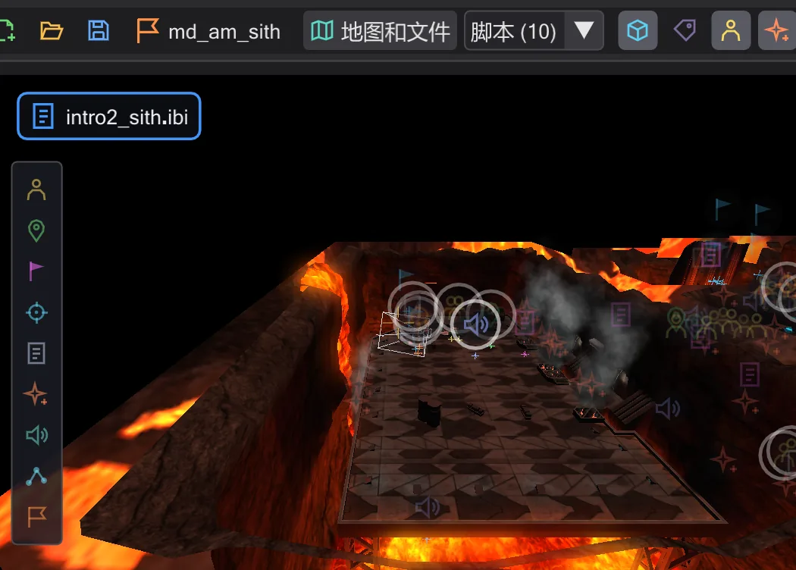

BehavEd 能做什么
全程导览:编写脚本、在地图上查看脚本、摄像机、角色、动画、任务以及周边工具。
BehavEd-Remake 编写 ICARUS 脚本——Jedi Academy 及其模组中每段过场动画和每个脚本化时刻背后的脚本。它写出的脚本与 Raven 原版 BehavEd 完全一致,逐个文件相同,然后向你展示它们的效果:在地图上、在三维中、随时间推进。下面每一节都链接到练习该内容的教程。
像原版一样编写脚本#

- 游戏的所有命令都在一个列表中——双击、拖动或按 Insert 即可添加。添加命令的三种方法
- 每个值都有自己的字段:允许值的列表、从地图中选取的名称、可试听的声音、使用
get、tag和random的表达式。修改命令的值 - 复制、移动、注释掉,每一步都可撤销——甚至可以单独撤销历史中间的某一步。移动、复制和注释掉行、撤销任何操作——甚至是中间的某一步
- 编译为游戏运行的
.ibi,清晰的消息可直接跳转到出错的行。编译并修复错误 - 每个命令和每个
SET_字段的说明:全部命令。
同一脚本的三种视图#


经典 是原版的树。图表 把任务显示为节点——玩家出生点、脚本运行器、角色、脚本——并可通过拖动把它们连接起来。轨道 按时间展开脚本,摄像机、每个角色和对白各占一行。脚本流程:经典、图表、轨道、把角色连接到脚本
三维地图——与游戏中的绘制效果一致#

地图直接从游戏的 .pk3 文件加载,包括着色器、光照贴图、雾、辉光、特效、天空传送门和镜面。你可以在其中飞行、从上方俯视、把视角保存到数字键上。用图块放置实体,在网格上拖动和旋转它们,在检查器中编辑每个键。地图、放置、移动和旋转实体、编辑实体的键、从上方查看地图
看得见、能驾驶的摄像机#
 动画
动画每个 camera ( MOVE ) 和 PAN 都是地图上带路径的一个镜头。用操纵器移动和旋转镜头,把镜头放到你正在看的位置,或者进入镜头以驾驶模式飞行。缩放、淡入淡出、震动和跟随在视图中的表现与游戏完全一致。摄像机、亲自驾驶镜头、把镜头放到你注视的位置、缩放、淡出到黑屏和震动
沿路径行走的角色#

角色以真实的模型和动画出现,并走到脚本指定的地方。它们的路径带有控制柄:拖动行走目标、在途中插入点、在行走、奔跑和后退之间切换,设置角色看向哪里以及面朝哪个方向。角色与路径、行走、奔跑或倒退行走、让角色注视某人、在某一时刻让角色转身
覆盖整个场景的时间轴#
 动画
动画以任意速度带声音播放场景。每个命令都是时间中的一个块——拖动它,后面的一切随之移动;拖动其边缘可改变持续时间。时间轴、在时间轴中重新调整过场动画的时间
动画:move 命令与 ROFF 文件#
 动画
动画为门、平台或飞船随时间设置关键帧。behaved 把它们写成 move 命令或生成 ROFF 文件,还能把游戏自带的 ROFF 文件转换成可修改的关键帧——作为副本,绝不改动原文件。移动物体动画与 ROFF 文件、5 · 飞船起飞、一扇会打开的门、修改游戏中的 ROFF 文件
任务:从零到 .pk3#

一键在任意地图上开始任务,打开游戏或模组中的任务,从其文件夹继续制作。保存任务 检查一切、编译每个脚本,并打包成一个包含地图、实体、脚本和 ROFF 文件的 .pk3——可直接用于 devmap。NPC 路径点网络也会在此过程中创建并检查。任务、你自己的任务:在 Taspir 起飞、为 NPC 提供行走路径
角色模型及其动画#

游戏中的每个角色及其皮肤,每个动画及其帧——单击播放,双击放入脚本。模型视图与角色、让角色播放动画、查看角色模型